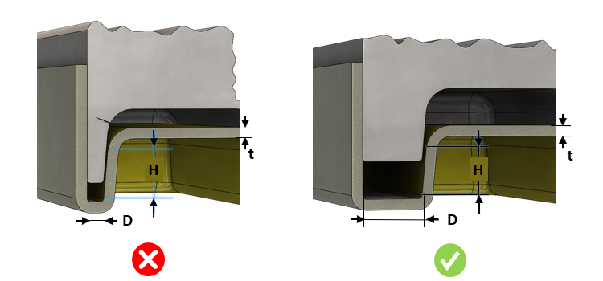

金型肉厚（または公称肉厚に対する比率）は、ユーザーが指定した値より大きくなければなりません。
金型肉厚は、ダイカストモデル内の各種フィーチャー間の間隔によって影響を受けます。リブやボスなどのフィーチャーが互いに近接して配置されたり、部品の壁に近い位置に配置されたりすると、冷却が困難な薄肉部が形成され、品質に悪影響を及ぼす可能性があります。金型肉厚が薄すぎる場合、製造が困難になるだけでなく、ホットブレードの発生や冷却の不均一といった問題により、金型寿命が短くなる原因にもなります。
許容される最小の金型肉厚は、工程および材料に関する検討に基づいて決定する必要があります。ただし、ダイカスト部品のフィーチャー間には 1 mm 程度のクリアランスを確保することが妥当であり、その寸法の金型肉厚を確保することが推奨されます。
金型肉厚の絶対値、または部品の公称肉厚に対する比率を使用して、このルールを構成します。
場合によっては、フェース高さが非常に小さいために、金型肉厚が不足していると判定されることがあります。このようなケースを避けるために、ユーザーは考慮対象とするフェース高さ（H）を >= <値> mm として入力することができます。
フェース高さが小さい場合、金型が破損したり曲がったりする可能性は低くなりますが、フェース高さが大きくなると、金型が破損または曲がる可能性は非常に高くなります。
ルール UI では、材料の一覧が 材料マッピング から読み込まれ、ユーザーは材料およびその値を構成することができます。
材料とその値を構成した後、ユーザーは Ctrl+M コマンドを使用して、ルール UI 上で材料グループおよびグレードとともに、構成済み材料の一覧をフィルタリングして表示できます。同じキー（Ctrl+M）を使用して、フィルタをリセットすることができます。

D = フィーチャー間の距離
H = 面高さ
t = 公称肉厚